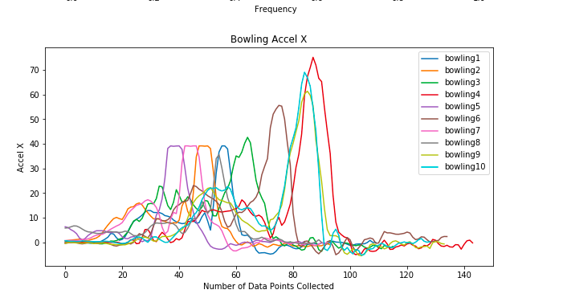
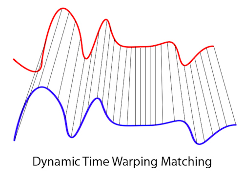

I sourced data for my gesture recognition system from two places: I pulled data from Jon Froehlich, whose Github account provided several data points on the gestures I wanted to classify. I also collected my own dataset, using an Android phone to record several trials of each of the gestures I wanted to recognize. However, it was clear from visualizing the two data sources that some trials were vastly different. This made classification difficult for any type of approach used. If there were further standards on whether data collected was done sitting or standing, the proper orientation for holding the phone, and how fast each gesture should be conducted, the chance of standardizing data would be higher. This experience made me realize how critical it is to be very prescriptive when collecting data in the wild. It's difficult to cover all possible scenarios when you initially develop a task, but by simply visualizing a few discrete datasets, you can develop more specificity in your instructions that will help you further on.
I compared two classification approaches to building a gesture recognition system. The first approach I explored was shape-matching. I took a relatively simple approach to tackling shape-matching – I created a test set which I compared to every gesture class using dtw to get a distance measure. The minimum distance between a given row in the test set and a gesture class determined the classification of that row. Because the test data being compared could only have one value, I used the sum of the magnitudes of accelerometer and gyroscope. I then tried a model-based approach using SVM (support vector machines). I tried to find useful aggregate data points to use in the model-based approach and ended up using means for x, y, z, and magnitude for accelerometer and gyroscope data as well as the trial length. Interestingly, when I tried adding relative measurements (x at start minus x at end, for example), I got worse results, so I quickly removed those features from my model. From a theoretical level, shape-matching approaches can be very powerful. It didn’t end up like this in my practical application, but being able to pull down and classify patterns within a continuous dataset seems extremely useful for most machine learning applications. It’s particularly useful for collecting other types of physiological data like skin conductance, heart rate etc. Interestingly, DTW was a popular approach to speech recognition but fell out of style or is seemingly “outdated”. Finally, the difference between SVM and DTW is most stark in the amount of data that is actually trained on. I had a larger jump in accuracy with SVM simply because one additional classification gave me a 9% boost. It made me realize that the way the data is manipulated (and by proxy, the type of approach used) can have a serious impact on how rigorous the accuracy is.
You can see my code in this Jupyter notebook